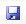

In this Topic Hide
SiteTools Main Menu is located at the top, left corner of the Main Screen. It contains the following command sub-menus:
Command |
Toolbar Icon |
Action |
New |
Start a new project. Restores input settings to their defaults. |
|
Open |
Open a saved project settings file: .STI for interactive calculator and table modes; .STB for Batch mode. |
|
Import BTH |
|
Import an old .BTH batch file created with SiteTools ver 3.3 |
Save |
 |
Save the current project settings: .STI for interactive calculator and table modes; .STB for Batch mode. |
Save As |
|
Save the current project settings under a new name and/or location. |
Sends the report (right side) to your printer. |
||
Print Preview |
Preview the print layout on-screen. |
|
Recent |
|
Access to the last 9 project files opened in SiteTools. |
Exit |
|
Exit/Close SiteTools. |
Command |
Toolbar Icon |
Action |
Copy |
If no text is highlighted, it copies the entire report (right) side to the Windows clipboard as delimited text. Otherwise, it copies highlighted text, just like (ctrl+C). Copied text can be pasted (ctrl+V) into other applications, e.g., MSWord, etc. |
|
Select All |
|
Highlights (selects) the entire output (right) side. |
Copy Image |
|
Copies reports to the Windows clipboard in bitmap (.bmp) format. |
Command |
Toolbar Icon |
Action |
Species Assignment Table ... |
|
Opens the Species Assignment Table dialogue box.to view and edit curve assignments for individual species. |
Save |
|
Replaces the default settings with the current input (left side) settings. |
Output Preferences |
|
Opens the Preferences dialogue box to view and edit Tabular Output settings and Advanced Settings affecting site index calculations. |
Command |
Toolbar Icon |
Action |
PDF Report |
|
Saves the report (right side) as a .PDF file. |
Save |
|
Saves the report (right side) as a delimited .TXT (ASCII) file. |
CSV Report |
|
Saves the report (right side) as a delimited .CSV file. |
Command |
Toolbar Icon |
Action |
Help |
Opens the Help function which explains how to access and use all the features in SiteTools. The F1 key opens Help, too. |
|
SINDEX log |
|
Disabled for now. |
About |
|
Opens the About screen displaying software version, copyright, and developer information. |